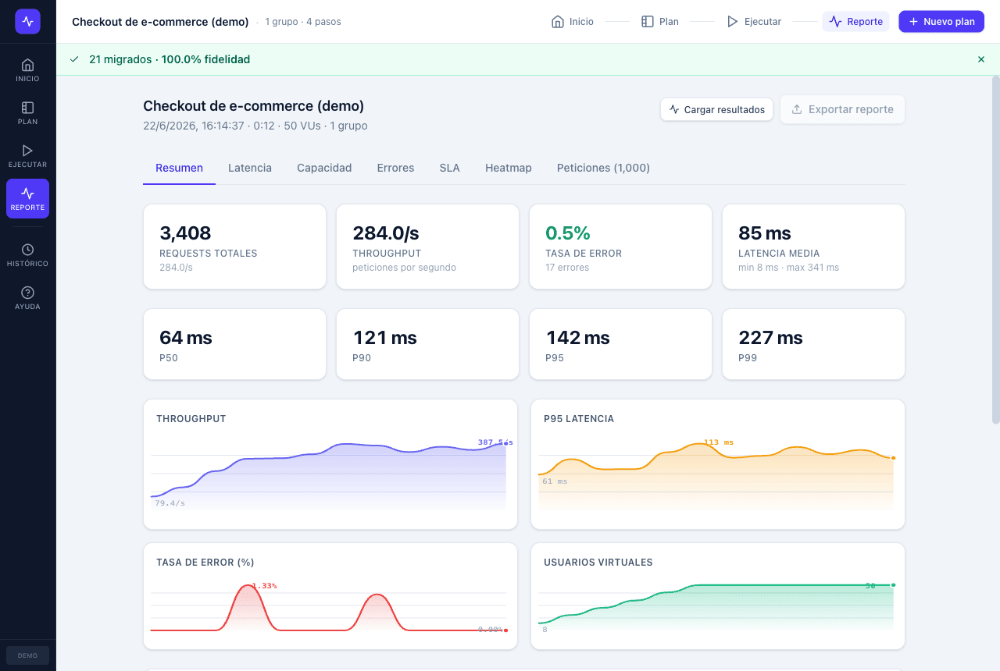
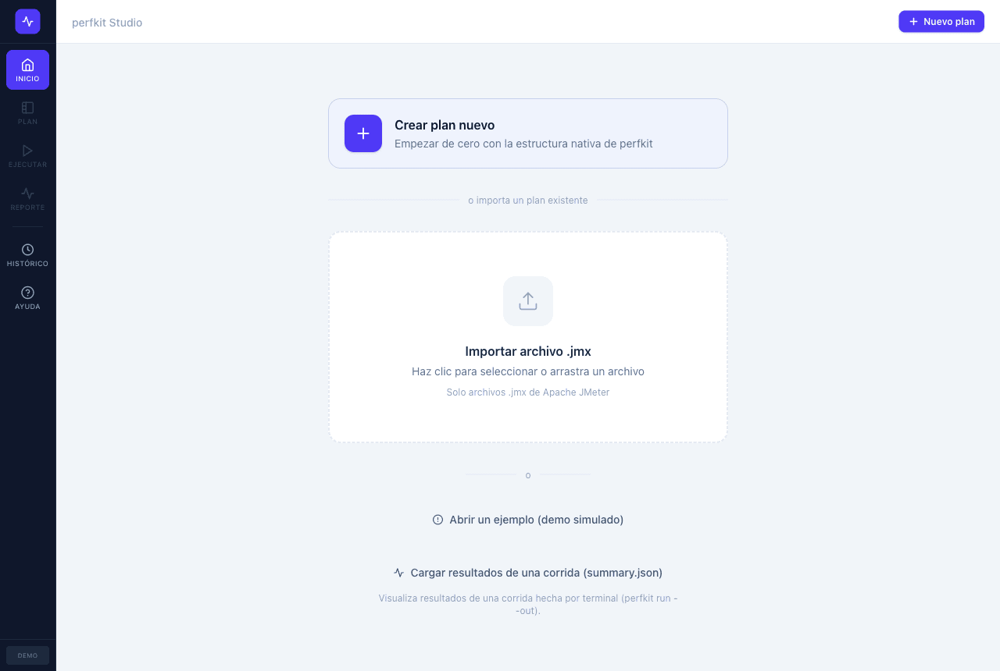
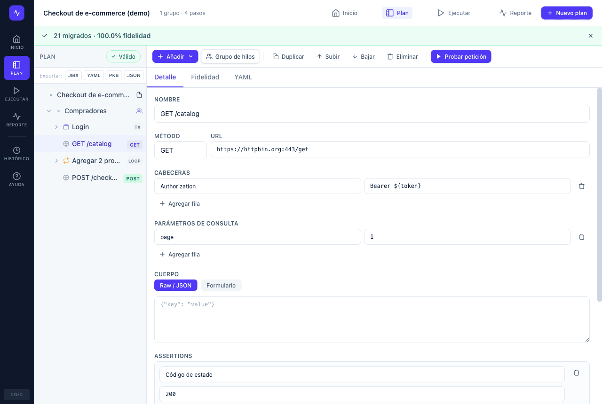
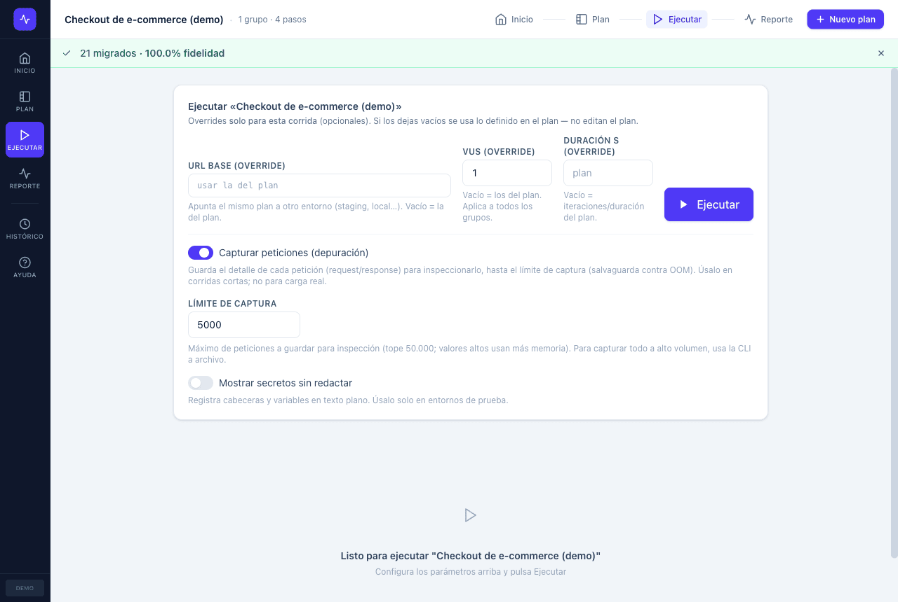
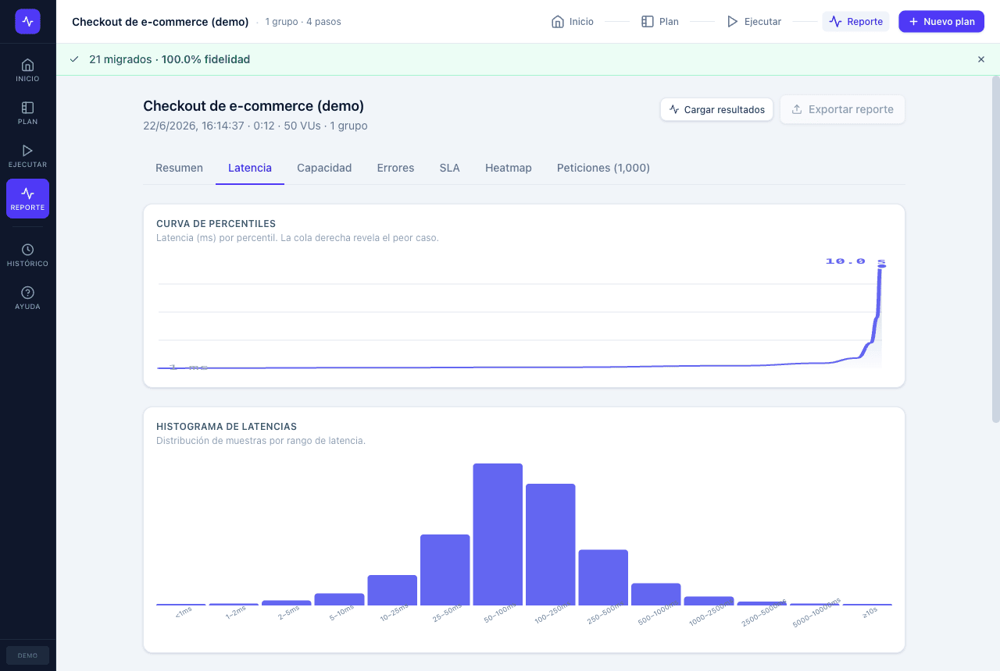
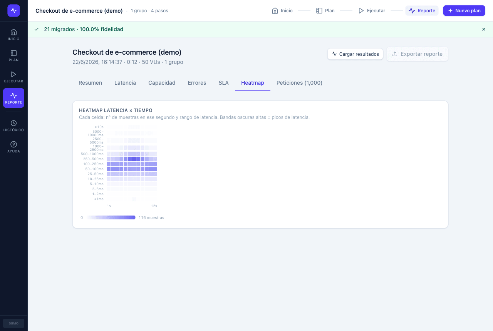
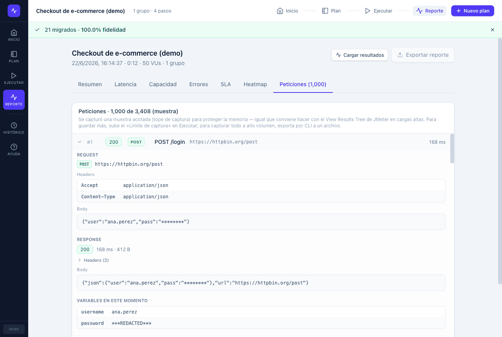

Importa tu .jmx, entiende qué migró y qué no, ejecútalo local desde la app o el CLI, obtén reportes que reconoces y llévalo a CI — con un motor en Rust/Tokio que usa ~50× menos memoria.

Principio rector
Capacidades
Un motor moderno, una app nativa para QA y un CLI listo para pipelines.
Parser de JMeter → IR canónico con reporte de fidelidad por elemento (migrated / assisted / unsupported / ignored). Nunca falla en silencio.
VUs asíncronos, ramp-up/hold/ramp-down, timers, assertions y extractores. Medición con reloj monotónico y agregación fuera del hot path.
Resumen, latencia (curva de percentiles, histograma, TTFB, Apdex), capacidad (saturación, bytes), errores, SLA, heatmap. HTML offline + JSON + JUnit.
Captura request/response por petición (como el View Results Tree) con redacción de secretos y tope de memoria configurable.
Tauri + React: crea o importa planes, edítalos, prueba una sola petición, ejecuta con dashboard en vivo y visualiza resultados — sin escribir código.
import · validate · debug · run · gate con exit codes confiables, logs y umbrales. Reportes como artefactos de pipeline.
Coordinator/worker que reparte la carga entre nodos (no la duplica) y consolida métricas.
Guarda corridas, fija un baseline y detecta regresiones y tendencias entre ejecuciones.
Redacción de secretos, plugins WASM firmados e IA opcional con SaaS apagado por defecto — nada sale sin tu opt-in.
perfkit vs JMeter
Mismo flujo QA que ya conoces, con un motor moderno detrás.
| Aspecto | perfkit | Apache JMeter |
|---|---|---|
| Runtime | Rust + Tokio (async) | Java/JVM (un hilo por VU) |
| Memoria por carga | ~50× menos en el benchmark* | Alta (JVM + hilos) |
| Interfaz | App nativa moderna (Tauri) | GUI Swing pesada |
| Formato del plan | IR legible (YAML/JSON) + binario + JMX | XML verboso |
| Migración | Importa tu .jmx con reporte de fidelidad | — |
| Inspección a alta carga | Captura acotada (protege memoria) | View Results Tree (revienta memoria) |
| CI | Exit codes + quality gate nativos | Requiere configuración/plugins |
| Reporte | HTML offline + JSON + JUnit + analítica | Listeners / plugins |
* Benchmark local reproducible (mismo plan y target). El throughput sale a la par cuando el target satura; la ventaja medida es la memoria. En honor a la verdad: JMeter sigue siendo más maduro en cobertura de protocolos y ecosistema de plugins — perfkit prioriza el flujo HTTP/QA y una migración creíble.
Casos de uso
Una corrida corta con captura para validar que el flujo responde antes de la prueba real.
Sube VUs con ramp-up y mide percentiles, throughput, errores y el punto de saturación.
Guarda un baseline y falla el pipeline (exit code) si una corrida regresiona.
El mismo plan contra staging/local cambiando solo la URL base.
Prueba una sola petición e inspecciona request/response y variables al vuelo.
Importa tu suite .jmx y entiende qué migró antes de invertir en reescribir.
La app
Primera pantalla operativa, sin landing interna, vista YAML opcional.






Empezar
Desde la terminal o la app nativa.
# importar → validar → ejecutar → gate perfkit import jmx plan.jmx -o plan.yaml perfkit validate plan.yaml perfkit run plan.yaml --vus 50 --duration 20 \ --out reports/run-001 perfkit gate reports/run-001/summary.json \ --thresholds thresholds.yaml
# requiere Rust + Node/pnpm cd ui && pnpm install pnpm tauri dev # desarrollo pnpm tauri build # binario release # o solo construir el workspace cargo build --workspace
Comunidad
Abre un issue con la plantilla adecuada — están diseñadas para entenderse y priorizarse rápido.